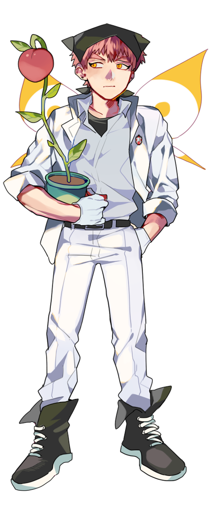
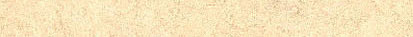
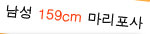

아직까지 성적 우수.
중학생이 되더니 용모단정을 포기한 것 같다.
질문하고 화내기보다는 혼자 잠자코 생각하게 되었다.
잘 웃고 여유도 생겼지만 성격도 야비해졌다.
주변 애들을 바보로 생각하고 있다.
공부를 주기적으로 안하면 현기증이 나는 건 여전.
착실하고 꼼꼼한 성격은 못버리고 있다.
마리포사라서 키가 작은 건 포기하고 지내고 있다.
최강둔부의 복숭아를 맡아서 기르고 있다.
재배에 은근 맛이 들렸지만 애써 티는 내지 않는다.
|  |  | |||||
|  | ||||||
|
아직까지 성적 우수. |
||||||
|
|
|
|
|
|
|
|